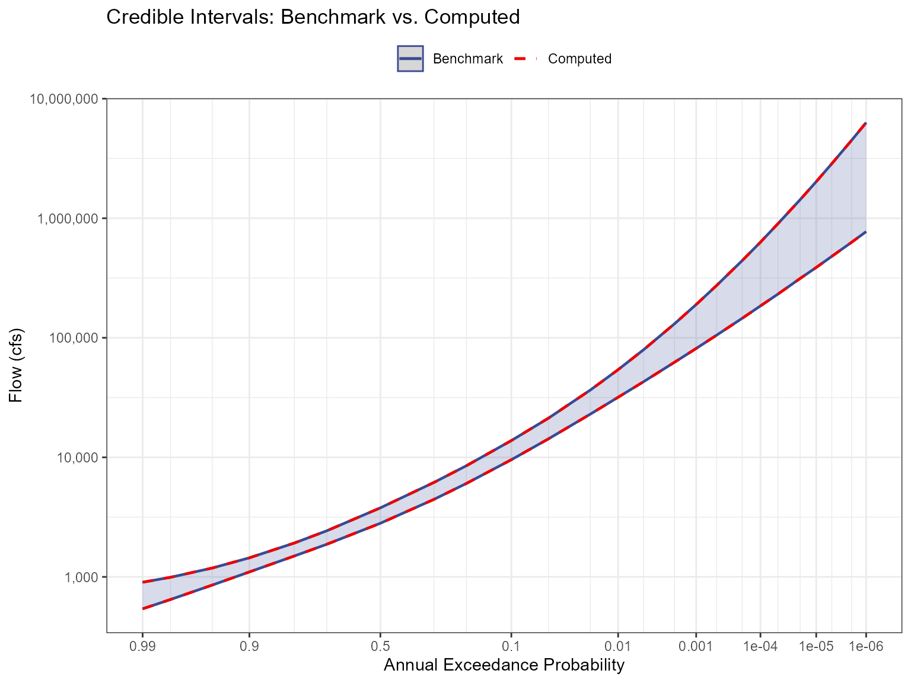

Validation of BestFit Parameter Sets
Source:vignettes/validation-vfc_parameter_sets.Rmd
validation-vfc_parameter_sets.RmdPurpose
Validate that the qp3() function and
lmom::cdfpe3() correctly reproduce the volume-frequency
curve (VFC) results (jmd_vfc) from RMC-BestFit from the
example LP3 parameter sets. This involves two tests:
Credible Intervals — Compute the 5th and 95th percentile flows across 10,000 BestFit LP3 parameter sets at each AEP and compare against the
jmd_vfcdataset.Posterior Predictive — For known discharges, compute the mean non-exceedance probability across all parameter sets and verify the resulting AEPs match
jmd_vfc.
Input Data
The jmd_bf_parameter_sets dataset contains 10,000 rows
of LP3 parameters (mean, standard deviation, and skewness in log space)
generated by RMC-BestFit via MCMC sampling. The jmd_vfc
dataset contains the benchmark volume-frequency curve results (from
Bestfit) including credible intervals and posterior predictive
values.
| Mean (log) | SD (log) | Skew (log) | Log-Likelihood |
|---|---|---|---|
| 3.5730 | 0.3754 | 0.5437 | -1093.040 |
| 3.5603 | 0.3599 | 0.7516 | -1092.829 |
| 3.5728 | 0.3673 | 0.7813 | -1092.882 |
| 3.5085 | 0.3586 | 0.7270 | -1093.707 |
| 3.5592 | 0.3891 | 0.4078 | -1093.874 |
| AEP | CI_95 | CI_5 | Posterior_Predictive |
|---|---|---|---|
| 0.00 | 6311066.13 | 772770.11 | 3146263.13 |
| 0.00 | 4492836.17 | 629905.87 | 2284549.67 |
| 0.00 | 2860344.66 | 479952.12 | 1498256.52 |
| 0.00 | 2023452.04 | 387634.95 | 1089633.22 |
| 0.00 | 1429747.32 | 313505.64 | 792677.12 |
| 0.00 | 900982.43 | 232158.93 | 520430.65 |
| 0.00 | 630620.36 | 184710.36 | 378309.38 |
| 0.00 | 442063.60 | 145517.05 | 274670.86 |
| 0.00 | 274186.09 | 105218.96 | 179337.17 |
| 0.00 | 189907.70 | 81431.62 | 129434.53 |
| 0.00 | 130969.25 | 62437.52 | 92992.94 |
| 0.00 | 79487.79 | 42945.77 | 59460.82 |
| 0.01 | 54119.39 | 31814.85 | 41935.39 |
| 0.02 | 36516.94 | 22963.55 | 29180.13 |
| 0.05 | 21271.98 | 14275.79 | 17525.68 |
| 0.10 | 13811.16 | 9551.08 | 11502.73 |
| 0.20 | 8507.02 | 6047.14 | 7174.00 |
| 0.30 | 6168.41 | 4451.56 | 5232.31 |
| 0.50 | 3780.81 | 2809.46 | 3247.54 |
| 0.70 | 2430.31 | 1874.34 | 2129.80 |
| 0.80 | 1920.34 | 1495.64 | 1693.81 |
| 0.90 | 1444.03 | 1100.24 | 1271.40 |
| 0.95 | 1186.41 | 854.40 | 1027.46 |
| 0.98 | 992.04 | 646.89 | 823.32 |
| 0.99 | 902.49 | 540.57 | 712.88 |
Test 1: Credible Intervals
For each AEP in jmd_vfc, compute the LP3 quantile (flow)
from all 10,000 parameter sets using qp3(). Then take the
5th and 95th percentiles across parameter sets to form the credible
interval. Compare against the benchmark values
(jmd_vfc).
aeps <- jmd_vfc$aep
ci_matrix <- matrix(nrow = nrow(jmd_bf_parameter_sets), ncol = length(aeps))
for (i in 1:ncol(ci_matrix)) {
for (j in 1:nrow(ci_matrix)) {
ci_matrix[j, i] <- 10^qp3(1 - aeps[i],
jmd_bf_parameter_sets[j, 1],
jmd_bf_parameter_sets[j, 2],
jmd_bf_parameter_sets[j, 3])
}
}
ci_5 <- numeric(ncol(ci_matrix))
ci_95 <- numeric(ncol(ci_matrix))
for (i in 1:ncol(ci_matrix)) {
ci_5[i] <- as.numeric(quantile(ci_matrix[, i], 0.05))
ci_95[i] <- as.numeric(quantile(ci_matrix[, i], 0.95))
}| AEP | Benchmark 95% | Computed 95% | Diff 95% | Benchmark 5% | Computed 5% | Diff 5% |
|---|---|---|---|---|---|---|
| 1.0E-06 | 6311066.13 | 6311066.15 | 0.03 | 772770.11 | 772770.12 | 0 |
| 2.0E-06 | 4492836.17 | 4492836.20 | 0.03 | 629905.87 | 629905.87 | 0 |
| 5.0E-06 | 2860344.66 | 2860344.65 | -0.01 | 479952.12 | 479952.11 | 0 |
| 1.0E-05 | 2023452.04 | 2023452.05 | 0.01 | 387634.95 | 387634.95 | 0 |
| 2.0E-05 | 1429747.32 | 1429747.31 | -0.01 | 313505.64 | 313505.63 | 0 |
| 5.0E-05 | 900982.43 | 900982.43 | 0.00 | 232158.93 | 232158.93 | 0 |
| 1.0E-04 | 630620.36 | 630620.36 | 0.00 | 184710.36 | 184710.36 | 0 |
| 2.0E-04 | 442063.60 | 442063.60 | 0.00 | 145517.05 | 145517.05 | 0 |
| 5.0E-04 | 274186.09 | 274186.09 | 0.00 | 105218.96 | 105218.96 | 0 |
| 1.0E-03 | 189907.70 | 189907.70 | 0.00 | 81431.62 | 81431.62 | 0 |
| 2.0E-03 | 130969.25 | 130969.25 | 0.00 | 62437.52 | 62437.52 | 0 |
| 5.0E-03 | 79487.79 | 79487.79 | 0.00 | 42945.77 | 42945.77 | 0 |
| 1.0E-02 | 54119.39 | 54119.39 | 0.00 | 31814.85 | 31814.85 | 0 |
| 2.0E-02 | 36516.94 | 36516.94 | 0.00 | 22963.55 | 22963.55 | 0 |
| 5.0E-02 | 21271.98 | 21271.98 | 0.00 | 14275.79 | 14275.79 | 0 |
| 1.0E-01 | 13811.16 | 13811.16 | 0.00 | 9551.08 | 9551.08 | 0 |
| 2.0E-01 | 8507.02 | 8507.02 | 0.00 | 6047.14 | 6047.14 | 0 |
| 3.0E-01 | 6168.41 | 6168.41 | 0.00 | 4451.56 | 4451.56 | 0 |
| 5.0E-01 | 3780.81 | 3780.81 | 0.00 | 2809.46 | 2809.46 | 0 |
| 7.0E-01 | 2430.31 | 2430.31 | 0.00 | 1874.34 | 1874.34 | 0 |
| 8.0E-01 | 1920.34 | 1920.34 | 0.00 | 1495.64 | 1495.64 | 0 |
| 9.0E-01 | 1444.03 | 1444.03 | 0.00 | 1100.24 | 1100.24 | 0 |
| 9.5E-01 | 1186.41 | 1186.41 | 0.00 | 854.40 | 854.40 | 0 |
| 9.8E-01 | 992.04 | 992.04 | 0.00 | 646.89 | 646.89 | 0 |
| 9.9E-01 | 902.49 | 902.49 | 0.00 | 540.57 | 540.57 | 0 |

Acceptance Criterion
Maximum absolute difference must be less than 0.05 cfs for the 95th percentile and 0.05 cfs for the 5th percentile. Differences are attributable to interpolation methods between the Excel-based RMC-BestFit and direct R computation.
max_diff_95 <- max(abs(ci_95 - jmd_vfc$ci_95))
max_diff_5 <- max(abs(ci_5 - jmd_vfc$ci_5))
pass_95 <- max_diff_95 < 0.05
pass_5 <- max_diff_5 < 0.05| Metric | Value |
|---|---|
| Max Absolute Difference (95th CI) | 0.029171 cfs |
| Tolerance (95th CI) | 0.05 cfs |
| Result (95th CI) | PASS |
| Max Absolute Difference (5th CI) | 0.003262 cfs |
| Tolerance (5th CI) | 0.05 cfs |
| Result (5th CI) | PASS |
Test 2: Posterior Predictive
For each discharge in jmd_vfc$posterior_predictive,
compute the exceedance probability from all 10,000 parameter sets using
lmom::cdfpe3(), then average to obtain the posterior
predictive AEP. Compare against the benchmark AEPs
(jmd_vfc).
discharges <- jmd_vfc$posterior_predictive
log_discharge <- log(discharges, base = 10)
posterior_matrix <- matrix(nrow = nrow(jmd_bf_parameter_sets), ncol = length(log_discharge))
for (i in 1:ncol(posterior_matrix)) {
for (j in 1:nrow(posterior_matrix)) {
nep <- lmom::cdfpe3(log_discharge[i],
c(jmd_bf_parameter_sets[j, 1],
jmd_bf_parameter_sets[j, 2],
jmd_bf_parameter_sets[j, 3]))
posterior_matrix[j, i] <- nep
}
}
post_pred <- numeric(ncol(posterior_matrix))
for (i in 1:ncol(posterior_matrix)) {
post_pred[i] <- 1 - mean(posterior_matrix[, i])
}| Discharge (cfs) | Benchmark AEP | Computed AEP | Difference |
|---|---|---|---|
| 3146263.1270 | 1.0e-06 | 0.00000100 | 0.00e+00 |
| 2284549.6670 | 2.0e-06 | 0.00000200 | 0.00e+00 |
| 1498256.5250 | 5.0e-06 | 0.00000500 | 0.00e+00 |
| 1089633.2170 | 1.0e-05 | 0.00001000 | 0.00e+00 |
| 792677.1156 | 2.0e-05 | 0.00002000 | 0.00e+00 |
| 520430.6521 | 5.0e-05 | 0.00005000 | 0.00e+00 |
| 378309.3790 | 1.0e-04 | 0.00010000 | 0.00e+00 |
| 274670.8588 | 2.0e-04 | 0.00020000 | 0.00e+00 |
| 179337.1693 | 5.0e-04 | 0.00049999 | -1.00e-08 |
| 129434.5271 | 1.0e-03 | 0.00099998 | -2.00e-08 |
| 92992.9425 | 2.0e-03 | 0.00199996 | -4.00e-08 |
| 59460.8162 | 5.0e-03 | 0.00499999 | -1.00e-08 |
| 41935.3873 | 1.0e-02 | 0.00999980 | -2.00e-07 |
| 29180.1266 | 2.0e-02 | 0.01999961 | -3.90e-07 |
| 17525.6757 | 5.0e-02 | 0.04999924 | -7.60e-07 |
| 11502.7267 | 1.0e-01 | 0.09999868 | -1.32e-06 |
| 7174.0036 | 2.0e-01 | 0.19999767 | -2.33e-06 |
| 5232.3126 | 3.0e-01 | 0.29999823 | -1.77e-06 |
| 3247.5406 | 5.0e-01 | 0.49999248 | -7.52e-06 |
| 2129.8035 | 7.0e-01 | 0.69999190 | -8.10e-06 |
| 1693.8094 | 8.0e-01 | 0.79999105 | -8.95e-06 |
| 1271.4046 | 9.0e-01 | 0.89999173 | -8.27e-06 |
| 1027.4576 | 9.5e-01 | 0.94999484 | -5.16e-06 |
| 823.3155 | 9.8e-01 | 0.97999938 | -6.20e-07 |
| 712.8795 | 9.9e-01 | 0.99000058 | 5.80e-07 |